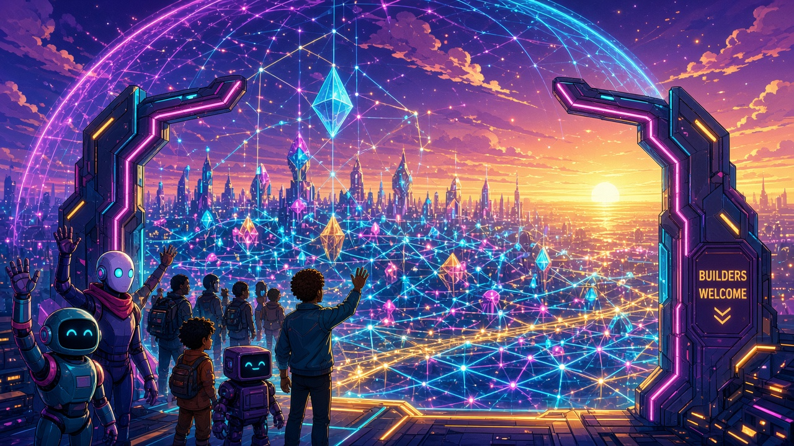

Ep5/5 · What's next: Builders Welcome — NuN Nexus of Unity

At dawn, two neon gate pillars frame a sprawling city of light. Every tower is linked by glowing lines into one vast lattice, and crystal shards hang inside a shimmering protective dome. A sign on the gate reads Builders Welcome. Robots and people stand side by side at the threshold, waving newcomers in toward the rising sun. This is where the NuN Nexus of Unity is heading: post-quantum-minded security around an ever-evolving mesh, a ternary TTF-9 core built for efficiency, and an open invitation to builders, agents and investors to join @bis3946, @OOVelma and @immuneos.